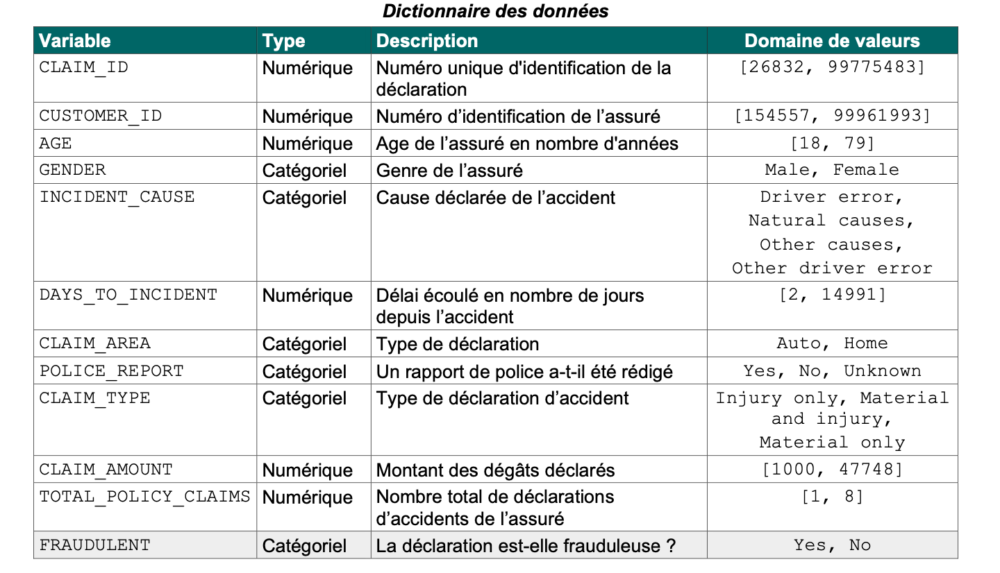
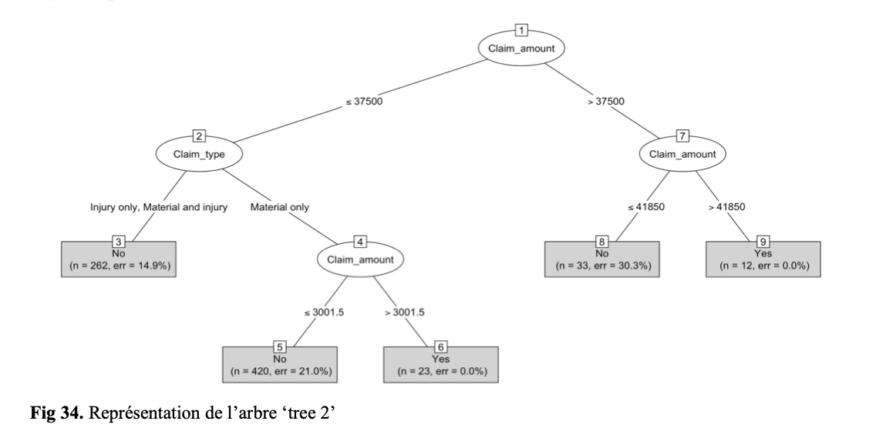
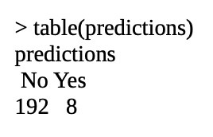
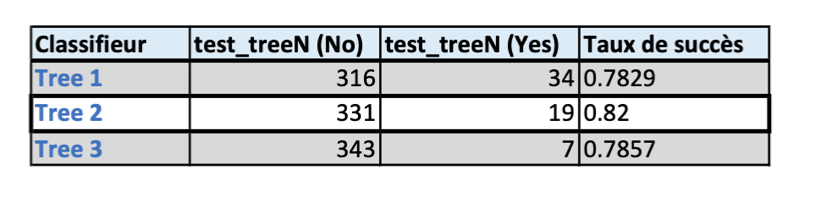

Insurance Fraud Detection System
RÉSUMÉ & OBJECTIF
J'ai réalisé ce projet au cours de ma première année de Master. Il s'agissait de ma première expérience concrète en analyse de données, qui m'a permis d'appliquer les notions apprises en cours à un cas réel.
L’objectif était d'aider une compagnie d'assurance à identifier les déclarations de sinistres présentant un risque élevé de fraude. À partir d'un jeu de données de 1 100 déclarations d'accidents, j'ai mené l'ensemble du projet : exploration et analyse des données, tests statistiques, puis développement de modèles de machine learning pour détecter les dossiers suspects. L'objectif final était d'aider les équipes à prioriser les contrôles manuels et à rendre le processus de détection plus efficace.
OUTILS
| Plateforme | RStudio (Environnement R) |
| Codes & Langages | Langage R |
| Librairies & Outils | readr, dplyr, ggplot2, stringr, C5.0, stats (K-means) |
LES ENSEMBLES DE DONNÉES
L'étude repose sur deux fichiers distincts contenant 12 variables financières, temporelles et démographiques (telles que l'âge, le montant des dégâts, le délai écoulé depuis l'accident ou la présence d'un rapport de police) :
| Data Projet 1.csv | 1 100 instances avec classe connue (FRAUDULENT : Yes / No) pour l'apprentissage et le test. |
| Data_Projet_1_New.csv | 200 nouvelles déclarations à prédire (classe inconnue) pour le déploiement business. |

EXPLORATION & PRÉ-TRAITEMENT
La première phase a consisté à analyser la structure du jeu de données (via str() et summary()). J'ai utilisé la bibliothèque stringr pour uniformiser les en-têtes en majuscules. Afin de ne retenir que les variables les plus prédictives, j'ai mené des tests d'indépendance du Chi-2 et de Fisher. Ces tests ont révélé que les variables POLICE_REPORT et CLAIM_TYPE présentaient des p-values très faibles (< 0.05), prouvant leur lien fort avec la fraude. À l'inverse, des variables comme GENDER, CLAIM_AREA ou INCIDENT_CAUSE n'affichaient aucune corrélation significative et ont été exclues pour optimiser les performances futures de l'arbre de décision, tout comme les identifiants techniques (CLAIM_ID, CUSTOMER_ID).
SEGMENTATION NON SUPERVISÉE (CLUSTERING)
Avant la phase prédictive, j'ai appliqué l'algorithme des K-means pour explorer des sous-groupes homogènes de clients. En fixant K = 4 clusters, le modèle a mis en évidence des typologies comportementales claires. Notamment, le Cluster 3 s'est avéré particulièrement remarquable car il regroupait exclusivement des déclarations frauduleuses (100% de taux de fraude sur ce sous-groupe), permettant d'isoler des caractéristiques communes et hautement suspectes chez ces assurés.
MODÉLISATION & SÉLECTION DU CLASSIFIEUR
Pour construire le système prédictif, j'ai partitionné les données en ensembles d'apprentissage et de test, puis généré et comparé plusieurs configurations d'arbres de décision. Le modèle final sélectionné a été l'arbre tree2 (basé sur l'algorithme C5.0), qui a obtenu le meilleur taux de succès global (82% à 84% de précision selon les critères d'évaluation). Ce classifieur a ensuite été appliqué sur les 200 nouvelles déclarations anonymes, aboutissant à la prédiction de 192 cas légitimes et 8 cas frauduleux à haut risque, exportés dans un fichier de résultats structuré.



DIAGNOSTIC
Avec le recul et l'expérience acquise, ce projet met en lumière plusieurs limites techniques et méthodologiques importantes qu'il convient d'analyser :
1. D’abord, le jeu de données initial est fortement déséquilibré, comptant 846 déclarations non frauduleuses pour seulement 254 cas frauduleux. Avec un tel déséquilibre, un modèle naïf qui prédirait systématiquement 'No' obtiendrait mécaniquement environ 77% de taux de succès. La performance de 82-84%, bien que supérieure, reste donc relativement faible en gain réel. Lors de la prédiction des 200 nouvelles instances, le modèle n'a détecté que 8 fraudes (soit 4%), signe d'un fort biais conservateur.
2. De plus, l’objectif métier fixé par le commanditaire était de minimiser les risques financiers en évitant à tout prix de classer un sinistre réellement frauduleux comme légitime (Faux Négatifs). Or, l'analyse approfondie de la matrice de confusion montre que le modèle a eu tendance à maximiser l'exactitude globale au détriment du Rappel (Sensibilité) de la classe minoritaire. Pour une application industrielle, il aurait fallu intégrer une matrice des coûts asymétrique ou appliquer des techniques de rééchantillonnage (SMOTE, downsampling) pour forcer l'arbre à traquer les fraudes plus agressivement.
3. Enfin, la phase de modélisation a été freinée par des limitations sur l'environnement R, notamment l'erreur récurrente error in plot.new() : figure margins too large lors de l'affichage des arbres de décision, m'obligeant à modifier manuellement les paramètres graphiques (par(mar=...)) à chaque exécution, altérant la fluidité de l'exploration visuelle.